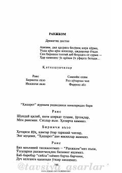

RInsonlardagi illatlar va g'iybatni hajv qiluvchi dramatik doston.
"Ranjkom" dramatik dostoni turli illatlar, odamlar orasidagi g'iybat, tuxmat va boshqalarni ranjitishni o'ziga kasb qilgan kimsalar haqidagi satirik asardir. Asar dialoglar shaklida yozilgan bo'lib, unda rais va tashkilot a'zolarining o'ziga xos "faoliyati" tanqid ostiga olinadi. Matn o'tkir hajviy ruhda tuzilgan.